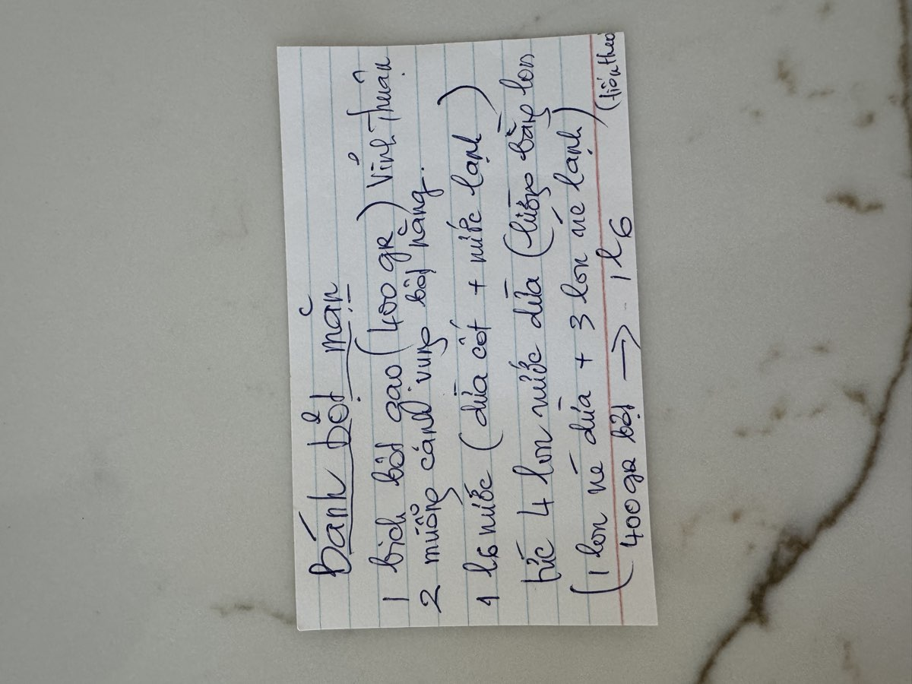
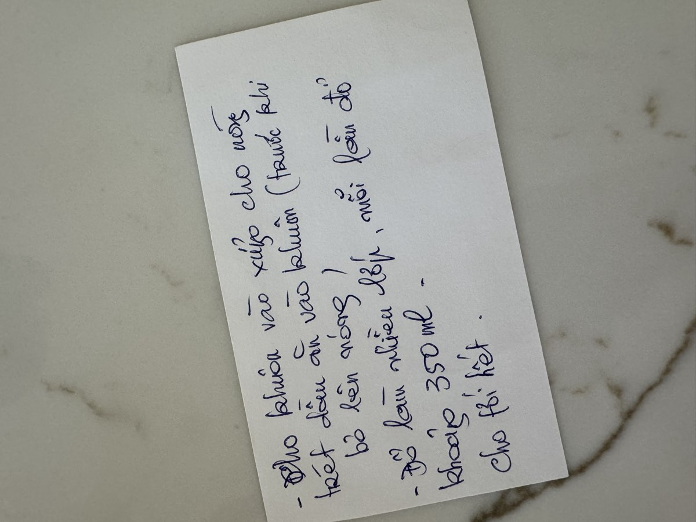

← Back to recipes
Bánh Bột Mặn
Savory Rice Flour Cake
From Mẹ — Oanh
Nguyên liệu · Ingredients
Bột · Batter
- 1 bag (400g) Vinh Thuan rice flour (bột gạo)
- 2 tablespoons tapioca starch (bột năng)
- 1 can (13.5 oz) coconut cream
- 3 cans cold water (use the coconut cream can to measure)
- 1 teaspoon salt
- 1/2 teaspoon sugar
Nhân · Topping/Filling
- 200g ground pork or diced pork belly
- 100g dried shrimp, soaked and chopped
- 4–5 shallots, thinly sliced
- 2 tablespoons fish sauce (nước mắm)
- 1/2 teaspoon ground black pepper
- 1 teaspoon sugar
- Vegetable oil for greasing
Ăn kèm · To Serve
- Fried shallots (hành phi)
- Scallion oil
- Nước mắm pha (dipping sauce)
- Fresh herbs and pickled vegetables
Cách làm · Instructions
- Prepare the topping: Heat a tablespoon of oil in a pan over medium heat. Fry the shallots until golden and fragrant. Add the ground pork and cook until no longer pink, breaking it apart. Add the dried shrimp, fish sauce, pepper, and sugar. Stir-fry for 3–4 minutes until well combined and aromatic. Set aside.
- Make the batter: In a large bowl, combine the rice flour and tapioca starch. Add the coconut cream and cold water (3 cans, measured with the coconut cream can). Whisk until smooth and lump-free. Add the salt and sugar.
- Set up a steamer with water at a rolling boil. Place the mold in the steamer to heat it up.
- Grease the heated mold with oil before adding batter.
- Steam in layers: Pour about 350ml of batter into the greased mold. Place in the steamer and steam until that layer sets and turns translucent.
- Add a spoonful of the pork and shrimp topping, then pour another layer of batter (about 350ml) over it. Steam again until set. Repeat this layering process until the batter is used up.
- After the final layer is steamed and set, remove from the steamer and let cool for at least 15–20 minutes before unmolding. The cake needs to firm up or it will fall apart.
- To serve, unmold and slice into pieces. Top with fried shallots and scallion oil. Serve with nước mắm pha and fresh herbs on the side.
Công thức gốc · Original handwritten recipe


❦
A recipe from Mẹ's kitchen